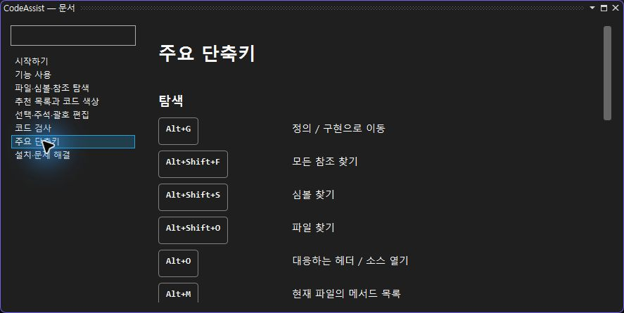
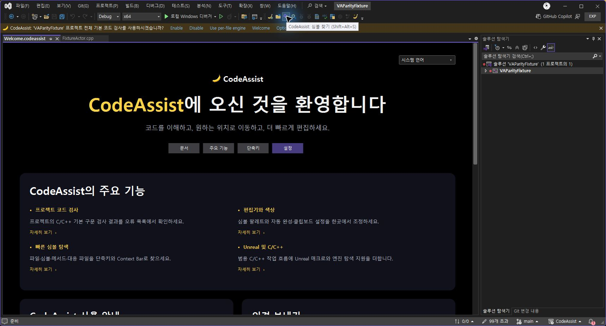
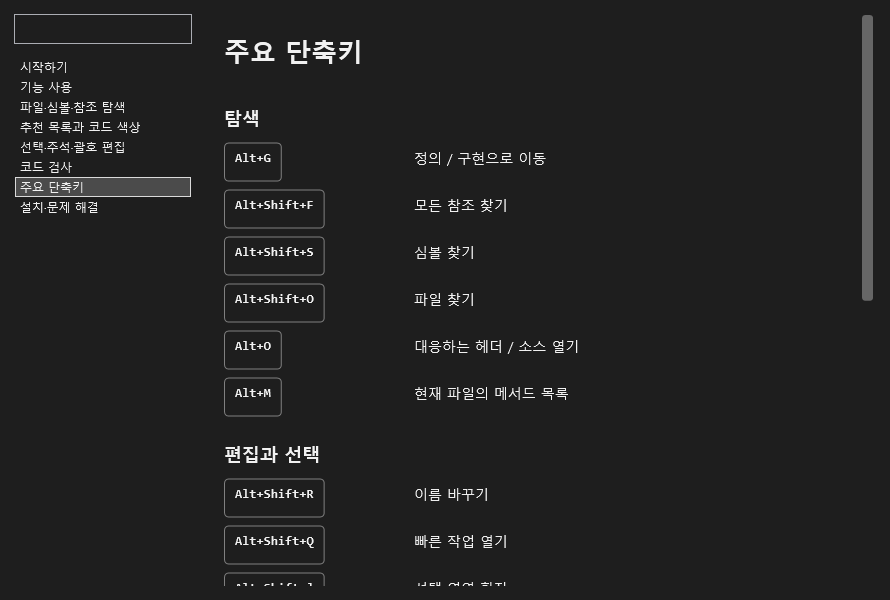
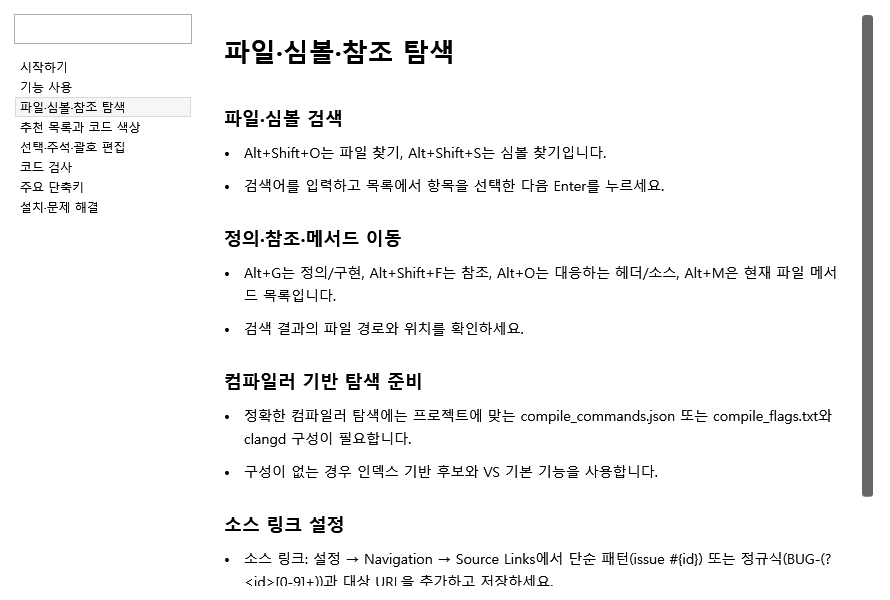

도움말 정리 · 한국어 툴팁 · 0.0.82
- 한국어·영어 도움말 8개 주제를 소제목·목록·단계로 재구성했습니다.
- 단축키15개를 키 조합과 설명이 분리된 독립 행으로 표시합니다. 키 조합은 중간에서 줄바꿈하지 않습니다.
- 도구 모음12개의 이름·툴팁을 언어 테이블에 연결했습니다. 실제 마우스 오버에서 ‘CodeAssist: 심볼 찾기 (Shift+Alt+S)’ 한국어 표시를 확인했습니다.
- 0.0.82 설치 바이너리6개 일치. 소스 테스트260개, 도움말 다크·라이트 및 열린 뷰 테마 전환 검사 통과.
실제 Visual Studio 도움말

실제 한국어 툴팁

오프라인 전체 뷰 검사


검증 요약 · 12개 실제 툴팁 · 설치 해시 · 패키지
전체 유사도 미산정·부분 코드 대응108개·완전 검증0/108. 부분 명세 확보108/108이며 전체 역분석 완료율은 미확인입니다. 전체 기능·성능·나머지 옵션의 VA 대조는 이번 수정 범위에 포함되지 않습니다.